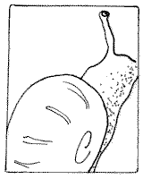

L'aut' jour, j'mangis un bouan fricot d'colimachons. V'là tch'avait si bouan goût que j'mé mîns dans la tête que v'là tchi valait la peine d'apprendre comment les graie pour mangi, et p'têt' que ma tante Annie m'en graietha en Jèrri.
La prumié chose à faithe est d'ramasser les colimachons! La préchaine chose est d'les laver dans deux'trais ieaux. Quand i' sont bein lavés i' faut les mettre dans un baisînne de tchique sorte auve eune fichue bouanne couoche de sé - du gros sé peut faithe et les châtchi bein pour que chaque colimachon aie la chance d'ête bein salé. Le sé les fait dêgorgi, et i' faut les laîssi souos l'sé vingt-quatre heuthes pour lus bailli la chance de dêgorgi comme i' faut! Oprés ch'là nou les r'lave bein dans deux'trais ieaux, et nou les r'met souos l'sé acouo eune fais pour un autre vingt-quatre heuthes (à mains qu'nou-s est prêssis d'les mangi, - dans chu cas-là, un d'mié-jour est longtemps assez) et pis faut les r'laver acouo deux'trais fais.
La préchaine chose est d'mettre l'ieau à bouolli. Dans l'ieau, faut met' eune pouongnie d'sé, un ouognon, eune carotte et deux'trais fielles de louothi. Quand l'ieau veint au tcherbouollon, il est temps d'met' les colimachons d'dans, et faut les laissi bouolli pour eune dem'ieuthe de temps. Quand nous les halle de d'sus l'feu, nou les laisse èrfredgi et pis nou prend eune adgulle-a-cauches et nou dêhalle chaque colimachon de d'dans sa cruque, comme nou fait en mangeant des v'licots, et nou met les colimachons d'un côte et les cruques de l'aut'.
En s'passant l'temps tandis qu'les colimachons sont à dêgorgi et à bouolli, nou c'menche à faithe eune sauce (ou pustôt eune pâte) auve de l'ail, des mies d'pain, du beurre, du pèrsi et du tîmbre. I' faut qu'l'ail s'sait copé en p'tits morcieaux gros comme des brîns d'grain, et l'pèrsi étou - et faut pas aver peux d'y'en mettre, du pèrsi, et pis faut mêlachi tout ch'là ensemblye auve les mies d'pain et l'beurre, et y' met' eune pînchie d'sé et d'paîvre, et en faithe eune pâte.
Quand la pâte est prête, nou prend la cruque et nou r'met l'colimachon d'dans. (J'avais oublié d'vouos dithe que l'colimachon avait r'raptichi hardi en l'salant et l'bouollant, et est bein pus p'tit que sa cruque acheteu). Eune fais l'colimachon r'mîns dans sa cruque, nou la r'remplye auve la pâte d'ail et d'pèrsi tch'i' veint d'ête prépathée. Le fricot est prêt acheteu pour mettre au fou. I' faut rangi touos les colimachons sus un pliat ou d's'assiettes, et arrêter qu'nou-s s'sait prêt à les mangi d'vant les met' au fou, car i' faut tch'i' s'saient mangis cauds. Nou cauffe le fou prumiéthement, et nou les laisse eune dgiexaine de munutes au fou pour tch'ils aient la chance de prendre le gout d'la pâte, mais i' n'faut pas les laissi trop longtemps, ou bein le beurre tch'est dans la pâte ess'sait tout fondu.
I' faut ête seux d'dithe à la bouannefemme d'les sèrvi cauds. Nou mange ch'là comme nou mange des v'licots, auve eune beurrée. Nou prend l'colimachon auve la main gauche, et nou l'dêhalle de la cruque auve eune adgulle-à-cauches. Sans doute man fréthe Sidney, tch'est gauchet, f'thait ch'là à l'arbours, li!
J'vouos asseuthe que ch'est un bouan fricot, et qu'nou peut en litchi ses babinnes! J'crais bein qu'y'a du monde tch'i' n'voudraient pas en mangi, mais j'pouorrais pas vous dithe pourtchi, bieau que j'sais bein qu'y'à un tas d'hèrnitcheurs dans chu monde, mais ch'est seux qu'y'en a pus en Jèrri qu'ichîn en Bretagne! Ch'est drôle que les gens aiment le lard, et n'y'à pas pus sale qu un couochon, tch'est tréjous à pilvâtchi dans sa saleté, et tchi n'est pas r'gardant tch'est qu'i' trouve à mangi dans s'n'auge, - mais i'font des grimaches quand nou lus pâle de mangi des colimachons, tchi sont hardi r'gardants d'chein tch'i' mangent! I' vivent sus la verduthe,- d'l'herbe, des fielles de bouais et d'fruit et d'ledgumes. Ch'tait dans un bieau gardin d'flieurs et d'ledgumes que j'ramâssîmes les cheins que j'mangi l'aut'jour. L'y'avait eune charmante Bretonne à m'aidgi à les ramâsser, et j'en trouvîmes au mains un couplye de douzaines cliutés sus des paithièrs appelés des "Beurrees Giffard." Ch'tait la prumié fais qu'j'avais ouï qu'y'avait des paithes nommées pour la famille de ma m'mèe! V'là tchi montre que nous-s apprend tchiquechose touos les jours s'nou garde l's'ouothelles et l's'yièrs ouverts!
George d'La Forge
Les Chroniques de Jersey 9/8/1947
Viyiz étout: